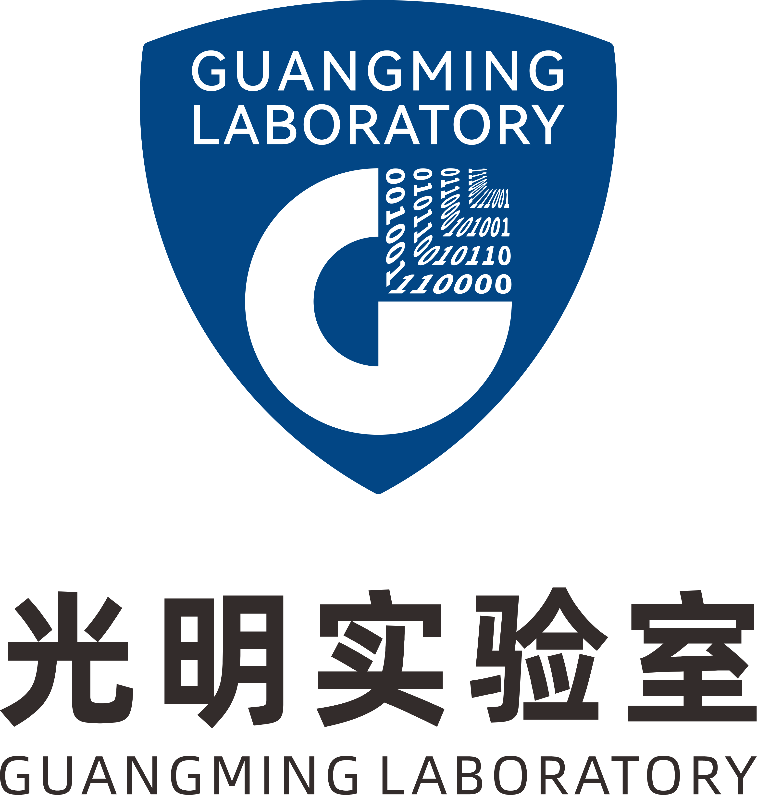
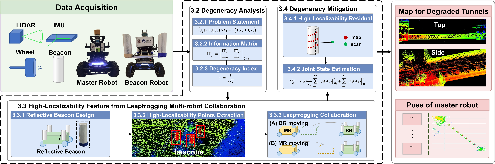
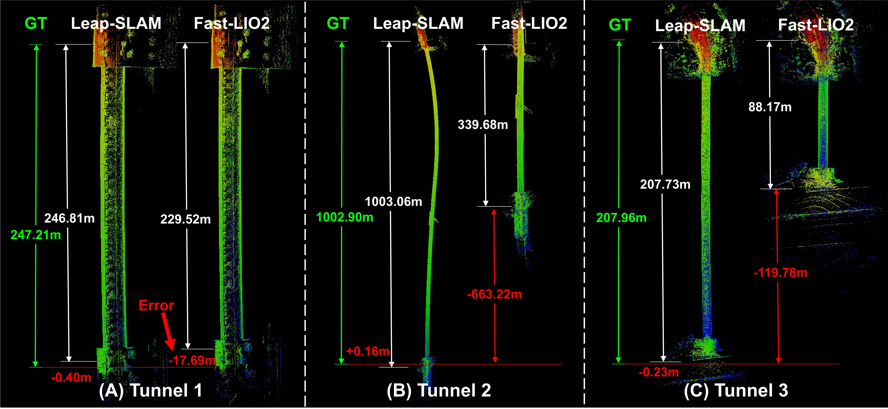
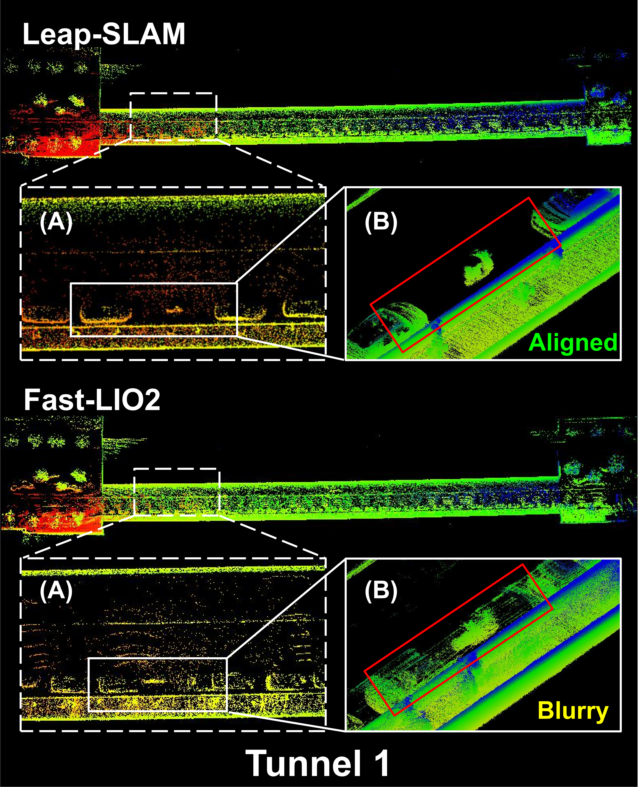

🎉 2026-06-05: Our paper has been accepted by Information Fusion!
With the rapid advancement of embodied robotics, robot inspection and detection in Global Navigation Satellite System (GNSS)-denied tunnels remains challenging. Light Detection and Ranging (LiDAR) based Simultaneous Localization and Mapping (SLAM) often suffers from degeneracy due to the scarcity of geometric features, leading to odometry drift and mapping inconsistencies. In this paper, we propose Leap-SLAM, a degeneracy-mitigated robust LiDAR-Inertial framework that effectively fuses high-localizability constraints via a leapfrogging multi-robot collaboration strategy. Specifically, we design degeneracy indices based on the information matrix for real-time uncertainty estimation. A Beacon Robot (BR) with reflective markers is introduced to provide external stable constraints, enabling a Master Robot (MR) to perform accurate state estimation even in feature-poor environments. Experimental validation in three diverse tunnels demonstrates superior performance over state-of-the-art methods. Notably, Leap-SLAM exhibits exceptional stability, maintaining high trajectory consistency and a negligible drift rate even after long-range traversals in feature-starved tunnels. This methodology offers a practical solution for robotic inspection in geometrically degraded engineering environments.

All the rosbag data used in this project can be downloaded from Google Drive.
We validated the superiority of our algorithm in three tunnel scenarios. Below are the comparison results with Fast-LIO2.


If you find this work useful, please cite our paper:
@article{chen2026leapslam,
title={Leap-SLAM: A Degeneracy-Mitigated Robust LiDAR-Inertial Framework},
author={Chen, Shoubin and Chen, Jiasheng and Zhang, Baiyang and Yan, Maosheng and Li, Jianping and Zhang, Bo and Li, Qingquan},
journal={Information Fusion},
year={2026},
note={to appear}
}
This project is built upon the foundational work of FAST-LIO2. We highly recommend referring to their repository for deeper insights into the core framework.